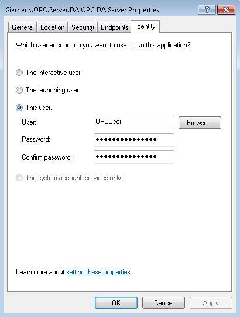

Configure Server-specific DCOM Settings
Once the system-wide DCOM settings are properly configured, it is necessary to configure the server-specific DCOM settings. To modify the configuration, do the following:
- In the Windows search box on the taskbar, enter DCOMCNFG.
- Press ENTER.
- The DCOM configuration process is initiated.
- In the Component Services window, under Console Root, expand Component Services, and then expand the Computers folder.
- My Computer is in the Computers folder.
- Expand My Computer and select DCOM Config.
- In the list of objects in the right window pane, right-click [company name].OPC.Server.DA and select Properties.
- The OPC DA Server Properties dialog box displays. In the OPC-server-specific settings, you must change only the Identity tab settings. The rest of the tabs can refer to the default configuration previously set (see Configure Default System-wide DCOM Settings).
- In the OPC DA Server Properties dialog box, select the Identity tab.
- Select the This user option.
- In the User field, enter the User Account name created for OPC (for example, OPCUser).
- Enter the password and confirm it.
- Click Apply.
- Click OK.
